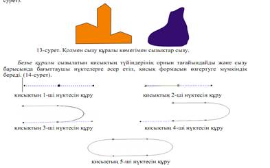
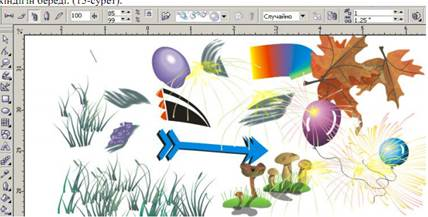

1.Қисықтарды редакциялау
2. Меңзерді басқару пернелерінің көмегімен жылжыту
Қисықтарды редакциялау белгілі дағдыларды талап етеді. Әрине, бастапқы кезде сіздердің фигураларыңыз әдемі болмайды, бірақ сіздер жұмыс барысында дағдыланатын боласыз. Кейбір тораптармен (узел)жүргізілетін операуиялырды сурет салу иструменттерімен (саймандарымен) және Нұсқағыш-Указатель исструменттерімен орындауға болады. Десе де контурларды редакциялау үшін CorelDRAW-тыѕ Фигура(Shape Tool) арнайы инструменті бар. Ол иструменттер панелінде жоғарыдан санағанда екінші орналасқан. Бұл инструментпен таңдағанда объектінің сырт пішіні өзгереді. Контур сары түспен жарықталған пунктир сызық түрінде болады. Объектінің тораптары шағын қара шаршылар сияқты бейнеленеді.
Қисықтарға айналдыру (өзгерту)
Контурларды реакциялау тұрғысынан қарағанда (немесе көзқарасы бойынша) ерікті пішінді фигуралардың (қисық объектілердің) графикалық примитивтерден негізгі айырмашылығы қисық объектінің тораптарын қандай да болсын тәсілмен өзгертуге болады, ал графикалық примитивтердің тораптарын тек аса шектелген тәсілдердің жиынымен редакциялайды. Сондықтан, егер сіздер сурет инстументімен салынған фигураның пішінін өзгерткіңіз келсе, онда оны қисыққа айналдыру керек. Бұл үшін Моньаж менюінің Преобразовать в кривые (Convert to shapes) командасын таѕдаңыздар. Бұл команда объектіні таѕдағаннан кейін қасиеттер панелінен де мүмкін болады. Ол қасиеттер панелінде сол бір атты батырмамен таңдалады. Батырмада төрт торабы шеңбер салынған.
Меңзерді басқару пернелерінің көмегімен жылжыту
Белгіленген торапты жылжыту үшін меңзерді басқару пенлерін пайдалануєа болады. Торап меңзердің пернесін әрбір басқан сайын бірдей шамаға ығысады. Шаг смещения қасиеттер панелінің Нұсқағыш иструментінің Ығысу қадамын(Nudge Offset) енгізу өрісінде беріледі. Бұл тәсіл редакцияланатын фигураның тораптарын дәл позициялауға мүмкіндік береді.
Осы объектіні қарастырайық. Өзгертулер жүргізгеннен кейін сегменттердің сырт пішін өзгермегеніне қарамастан, басқарушы нүктелердің болуы біздің алдымыздағы қисық екендігінің айғағы.оның әрбір торабының екіден, ал соңғысы тораптарының-бірден басқарушы нуктелері бар. Қазіргі барлық тораптар сүйір- мұндай тораптың басқару нұктелері бір-бірнен тәуелсіз болады.Сүйір торап арқылы өтетін қисық кез келген бұрышта иіле алады. Тораптың басқарушы нүктелерін апара отырып, сүйрі торап арқылы өтетін қисықтың жатықиілісі немесе кез келген бұрышы болатындығына көздеріңізді жеткізіңіздер. Сонан кейін бастапқы қалыпқы қайтыңыздар.Бўл қисыққа сүйір торап керек болмайды. Барлық тораптар қисықтыѕ иілісінің жатық болуын қамтамасыз етуі керек. Бұлар немесе тегістелген немесе симметриялы тораптар.
Симметриялы тораптар тораптың екі жағына бірдей қисықтық жасайды, сондықтан, олар негізінде симитриялы объектілерді редакциялағанда қолданылады. Біздің жағдайда әдемі иілістерді қалыптастыру үшін тегістелген тораптарды қолданайық. Олар қисықтыѕ түрін (пішінін) неғұлым еркін басқаруға мүмкіндік береді.
CorelDRAW жұмыс істейтін сызықтар модельінде екі түсінік негізге алынады: түйін
және сегмент. Бейне жазықтығындағы қисық сегменттің бір ұшын көрсететін нүктені - түйін деп атайды. Сегмент - деп екі қатар орналасқан түіндерді қосатын қисықтың бір бӛлігін айтады. Түйіндер мен сегменттер бір-бірімен тығыз байланыста: тұйықталған сызықтарда сегменттер саны мен түйіндер саны тең, ал тұйықталмаған сызықтарда түйіндер саны 1-ге артық. Кез келген сызық CorelDRAW-да түіндер мен сегменттерден тұрады, қисықтарға қолданылатын барлық операциялар солармен жұмыс істейді. Жалпы сипаты бойынша түйіндер үшке бӛлінеді: тұйықталмаған қисықтың бастапқы түйіні, түзусызықтың және қисықсызықтық түйіндер.
Түйін сыну. Түйін сыну нүктесі деп аталады, егер түйінде оның жанындағы екі сегментке жүргізілген жанамалар бір түзудің бойында жатпаса, яғни олардың арасында бұрыш бар болса.
Жайылған түйіндер. Түйін жайылған деп аталады, егер оның жанындағы екі сегментке жүргізілген жанамалар бір түзудің бойында жатса.
Симметриялық түйіндер. Жайылған түйін симметриялық деп аталады, егер бағыттаушы нүктелер одан бірдей қашықтықта орналасқан болса.Симметриялық түйіндер сыну нүктелері мен жайылған түйіндерге қарағанда сирек қолданылады.
Тұйықталған, тұйықталмаған және біріктірілген сызықтар сызықтың шеткі түйні деп, бір ғана сегментпен жанасатын түйінді айтады. Алдыңғы жағында сегмент жoқ түйін, бастапқы түйін деп аталады. Бастапқы түйіні бар сызық, тұйықталмаған деп аталады. Шеткі нүктелері жoқ сызық тұйықталған деп аталады.
Біріктірілген сызықтар әрқайсысы тұйықталған немесе тұйықталмаған сызықтардан тұратын бірнеше тармақтардан құралған объектілер.
Сызықтар және қолмен сызу мен Безье құралдары. Қолмен сызу құралы түзу кесінділері мен сынған түзулерді және еркін формалы қисықтар сызу үшін қолданылады.
Қисық сызу үшін, құралды таңдағаннан соң, тышқан бағыттауышын сол жақ батырманы басып тұрып жұмыс бетінде жылжытамыз. Түзу сызық сызу үшін құралды таңдаған соң тышқанның сол жақ батырмасын кесіндінің басында және соңында шерту керек.

Суперсызық құралы "суперсызықтар" құрамындағы объектілерді салу үшін
қолданылады. Құралды таңдаған соң экранның сол жақ жоғарғы бұрышында қосымша
құралдар пайда болады. (показать рисунок) (дайын суреттер, шашыратқыш, кисть,
каллиграфия).
Бұл қосымша құралдар төгілмелі тізімнен таңдалынған объектілерді қайталап салу
мүмкіндігін береді.

Бақылау сұрақтары:
1. Түйін дегеніміз не ?
2. Сыну нүктесі, жайылған түйін және симметриялық түйіндер дегеніміз не?
3. Қолмен сызу, Безье,Суперсызық құралдары не үшін қолданылады ?
4. Қандай жағдайда экранда бірнеше обектілермен жұмыс істейтін құралдар пайда болады ?
5. Объектілерді қисыққа қалай айналдыруға болады?